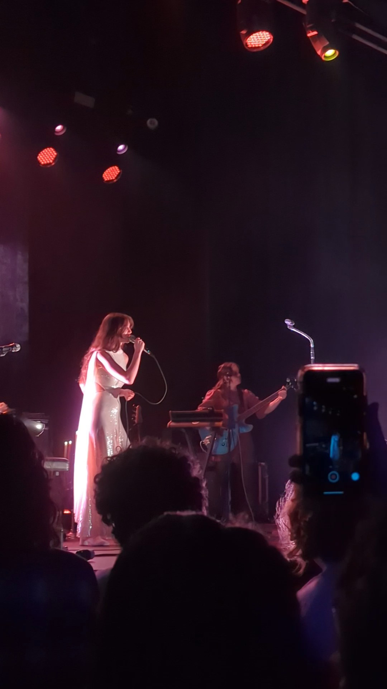

journal post 4
date: october 31st, 2023
This image is interesting because it seems very grainy (just how concert photos are on a phone), which will tie into the general aesthetic of the collection of images. The image is of Weyes Blood performing “It’s not just me, it’s everybody”. The image is meant to play a video, which is unable to be determined from the photo.
This image is meant to be a part of a collection of artists I have seen. They are meant to be laid out in polaroid form and play the video upon interaction. These images tell the story of the musical artists I listen to. None of the concerts I have gone to have stadium tours and are primarily the same venues (except for smash mouth). This photo. This concert was recent and was honestly a magical experience. It made me appreciate Weyes Blood’s music much more (go listen).
